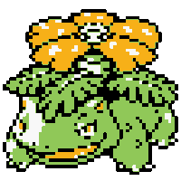

The Kanto starters
These are the final evolutions of the first Gen's starter Pokemon.Venusaur

| HP | 80 |
|---|---|
| Atk | 82 |
| Def | 83 |
| Sp Atk | 100 |
| Sp Def | 100 |
| Speed | 80 |
Charizard


| HP | 78 |
|---|---|
| Atk | 84 |
| Def | 78 |
| Sp Atk | 109 |
| Sp Def | 85 |
| Speed | 100 |
Blastoise

| HP | 79 |
|---|---|
| Atk | 83 |
| Def | 100 |
| Sp Atk | 85 |
| Sp Def | 105 |
| Speed | 78 |